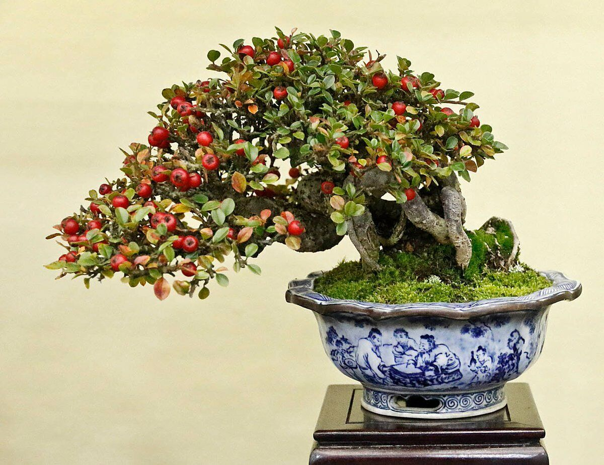
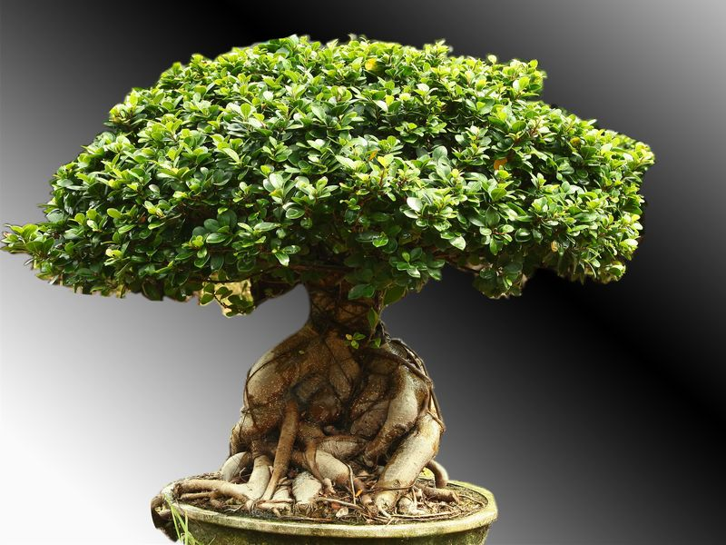
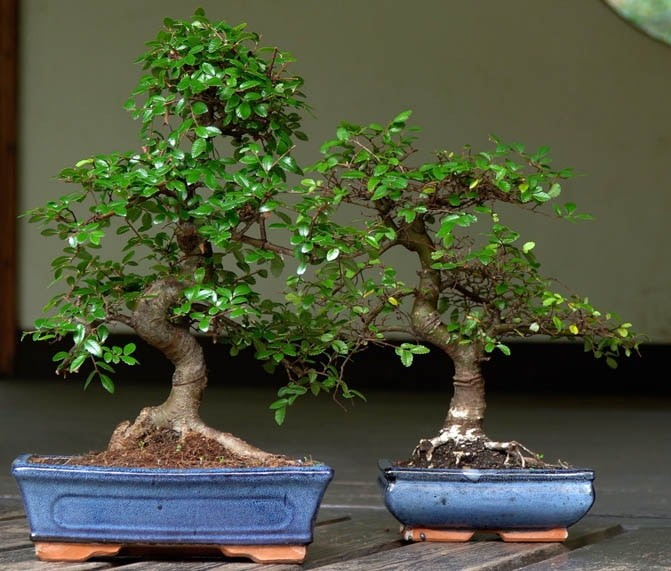

Beginner Bonsai
Not everyone can take care of a Bonsai right off the bat. However, they can start off
with some of the least troubling species of Bonsai, which do not need much care or precaution. In
this list, our team has compiled a list of the best "Beginner
Level" Bonsai which can usually survive pretty well even if the caretaker does not have any specific
skills or knowledge. They are also some of our best selling products for this very reason. Most of
them can also be left alone during
vacations without any major effects. Not only this, they also have a lower tendency to get infected.
Satsuki Azalea
Azaleas thrive in a sunny spot, but during the hottest time of the day in summer, it is
better to provide shade. When they are flowering, they should be protected from both rain and the hot
sun to make the flowers last longer. Healthy and
mature azaleas can endure some frost but should still be protected from colder temperatures.
Satsuki azaleas are evergreen, small shrubs that should be kept outdoors. The branches of an Azalea
can be brittle especially when the tree grows older, so it is advised to be careful when wiring your
tree, especially as a beginner.
They are not often infested by pests, but low humidity can support spider mites which can be treated
with a suitable pesticide and improving humidity.
Cotoneasters

Cotoneasters are small trees or shrubs that are native to Europe, Africa, and Asia. Most
species have small dark glossy leaves, and little white flowers in spring, which is followed by red,
orange or yellow, apple-shaped fruit during the
autumn season.
A spot in complete sunlight either indoors or outside is recommended for a
cotoneaster. If they are planted in the ground, they should tolerate freezing weather quite well. They
tend to be drought-tolerant as long
as the dry periods are short. Additionally, because the branches are flexible, so they are easy to shape
via wires.
Ficus

Ficus thrives in an indoor environment. Ficus retusa and Ficus ginseng, both have visually
interesting trunks and can be grown inside.
They are adaptable because of their ability to respond positively to growing
restrictions. Since ficus trees are content in smaller containers, they're well suited to bonsai.
They're also forgiving of lapses in watering
and other types of care. Ficus plants don't mind the dry conditions of indoor environments, but it is
recommended to choose a sunny spot for the bonsai. They are also quite resistant to pests and other
infections.
Juniper
They are evergreen coniferous trees or shrubs. Junipers can have two types of leaves,
needle-like, and scale-like. These trees look very attractive in miniature form. Junipers don't do well
indoors. Instead, they should be placed in a spot
where they can get at least 4 hours of sun per day. Unlike other less hardy bonsai-friendly trees,
junipers can handle cold weather as well.
Similar to other beginner-friendly bonsai trees, junipers also tend to be
pest-resistant. However, it is important to remember that spiders, mites, and webworms sometimes target
them. Regular pruning prevents this
and also keeps the leaves from getting too messy. Although aggressive pruning can weaken the plant and
cause browning of leaves, they will ultimately recover from pruning mishaps.
Chinese elm

The Chinese Elm is native to China as well as eastern Asia. It is a slow-growing plant that
is perfect for beginners because it can stay alive almost anywhere. It is, however, recommended to pick
a spot with lots of bright early morning sun
that turns shady in the afternoon. It is easy to prune, and its slow growth makes shaping easier and
simpler. The trees are also not very vulnerable to pest infestations.
An indoor Chinese Elm Bonsai can be placed outside during the summer, but it is
best to bring it into a cool, but frost-free room in the winter. Depending on winter temperatures,
Chinese Elms either drop their leaves
or keep them until spring, which is when the new shoots emerge.